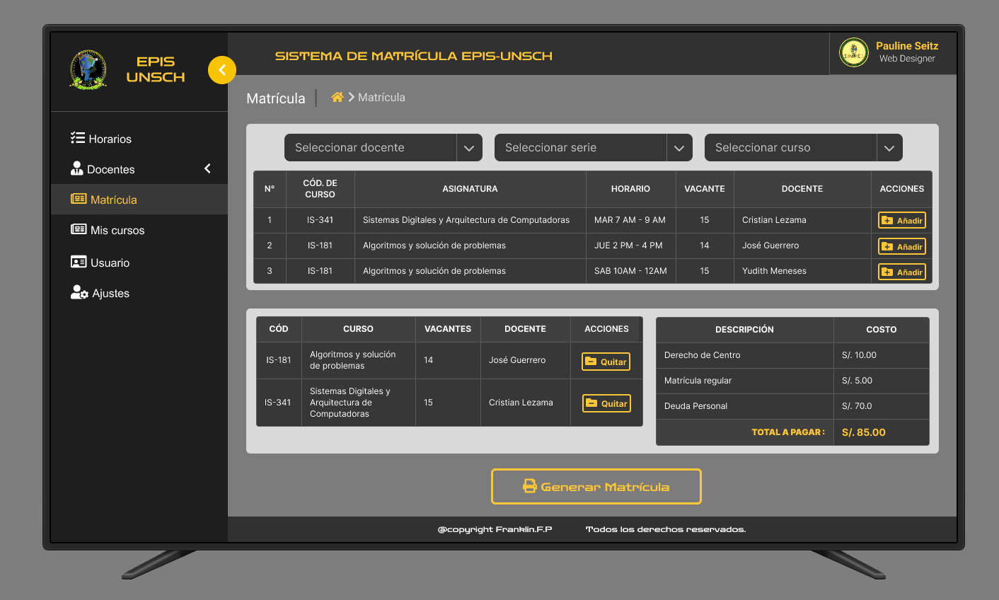
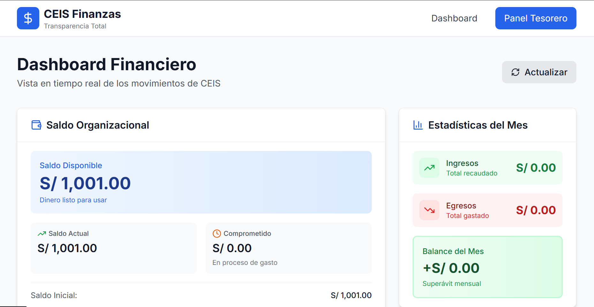

Nuestras Propuestas
Plan integral de visibilización, posicionamiento y organización de ferias tecnológicas
Justificación:
La carrera profesional de Ingeniería de Sistemas carece de la visibilidad necesaria, lo que afecta la percepción de su importancia, limita las oportunidades de empleo para los egresados y reduce el apoyo institucional y externo. La ausencia de infraestructura adecuada para una carrera líder en tecnología es crítica y debe ser visibilizada urgentemente para que las autoridades comprendan y actúen. Esta propuesta busca revertir esta situación, posicionando la carrera como una referencia tecnológica y fortaleciendo vínculos con el sector productivo y académico.
Objetivos:
- Crear una página web oficial y un comité de visibilización.
- Organizar al menos 2 eventos y obtener 3 alianzas estratégicas con empresas y universidades en el primer año.
- Hacer uso de recursos propios, voluntarios y apoyo de la universidad para la ejecución.
- Fortalecer la imagen y relevancia de la carrera para mejorar empleabilidad y recursos.
- Implementar el plan completo en un plazo máximo de 12 meses.
Metodología:
- Formación del comité de visibilización con representantes de estudiantes, profesores y exalumnos durante el primer mes.
- Desarrollo y lanzamiento de la página web oficial de la EPIS en 3 meses, incluyendo secciones de noticias, eventos, y bolsa de trabajo.
- Diseño de un plan de comunicación digital (redes sociales, correo electrónico) en el segundo mes.
- Organización de al menos 4 eventos (ferias de empleo, talleres, conferencias) durante el año para promover la carrera.
- Creación y difusión de material promocional audiovisual y digital.
- Establecimiento de alianzas con al menos 5 empresas y universidades dentro del año para fortalecer la empleabilidad y colaboración académica.
Para el desarrollo de la propuesta se plantea una metodología basada en actividades participativas y organizativas:
Planificación y Organización del Evento:
- Conformación de un comité organizador integrado por docentes, estudiantes y egresados.
- Elaboración del cronograma, presupuesto y logística del evento.
- Definición de categorías de participación (desarrollo web, apps móviles, videojuegos, proyectos de IA, prototipos tecnológicos, etc.).
Convocatoria y Difusión:
- Lanzamiento de convocatorias internas para estudiantes y egresados.
- Difusión del evento mediante redes sociales, página institucional y alianzas con instituciones educativas.
- Coordinación con colegios, institutos y empresas locales para su asistencia o participación.
Ejecución de la Feria Tecnológica:
- Instalación de stands para presentación de proyectos.
- Realización de demostraciones en vivo, talleres abiertos y charlas breves.
- Evaluación de proyectos (opcional) por un comité técnico para destacar iniciativas innovadoras.
Evaluación y Retroalimentación:
- Recolección de opiniones de participantes y asistentes mediante encuestas.
- Análisis de impacto en visibilidad, participación y percepción de la carrera.
- Elaboración de un informe final con recomendaciones para futuras ediciones.
Programas de capacitación, talleres y cursos certificados
Justificación:
La rápida evolución de la tecnología y la demanda del mercado laboral hacen necesario que los estudiantes de ingeniería se mantengan actualizados en habilidades técnicas y blandas. Existe alta demanda en cursos tecnológicos, pero muchos estudiantes no tienen acceso a capacitaciones orientadas al mercado laboral. Ofrecer programas de capacitación y talleres accesibles a todos los estudiantes fomentará el aprendizaje práctico, el crecimiento profesional y generará ingresos sostenibles para el centro de estudiantes.
Objetivos:
- Capacitar a los estudiantes en habilidades técnicas que complementen su formación académica.
- Facilitar el acceso al conocimiento mediante cursos libres abiertos a todos los alumnos de la escuela profesional de Ingeniería de Sistemas.
- Promover el aprendizaje colaborativo, permitiendo que estudiantes de diferentes disciplinas se beneficien de conocimientos diversos.
- Ofrecer formación técnica accesible a los estudiantes.
- Generar ingresos regulares para financiar actividades académicas.
- Elevar el perfil profesional de la comunidad estudiantil.
Metodología:
Identificación de Temas:
- Recoger información sobre los intereses y necesidades de capacitación de los estudiantes a través de encuestas.
- Seleccionar temas relevantes como programación, bases de datos, ciberseguridad, y habilidades blandas.
- Organizar 2 o más talleres por semestre.
- Seleccionar instructores internos o externos.
Colaboración con Expertos:
- Contactar a docentes y profesionales del sector para que ofrezcan talleres prácticos sobre sus áreas de especialización.
- Fomentar el aprendizaje práctico a través de ejercicios y proyectos.
Inscripciones Abiertas:
- Promover los cursos y talleres mediante redes sociales y carteles en la facultad y universidad.
- Cobro simbólico entre S/ 10 a S/ 25 por participante.
- Emitir constancias digitales.
Evaluación Continua:
- Implementar evaluaciones al finalizar cada taller para recoger retroalimentación y mejorar futuros programas.
Desarrollar e implementar un Sistema de Matrícula Digital para la Escuela (EPIS – UNSCH)
Justificación
La EPIS actualmente realiza procesos de matrícula con métodos manuales, poco eficientes y que no reflejan el nivel tecnológico propio de una carrera de Ingeniería de Sistemas.
- Largas colas de estudiantes que buscan asegurar un cupo.
- Procesos poco transparentes y sujetos a errores humanos.
- Desorganización en la asignación de laboratorios.
- Pérdida de tiempo y desgaste físico tanto para estudiantes como docentes.
- Falta de coherencia institucional al no aplicar tecnología en una escuela tecnológica.
Además, existen precedentes negativos en semestres anteriores, donde la ausencia de un sistema digital generó malestar, problemas logísticos y situaciones injustas para los estudiantes.
Dado que ya se cuenta con el análisis de requerimientos y el diseño en Figma, existe un avance real y sólido para iniciar el desarrollo.
Con un equipo comprometido, el sistema puede implementarse en aproximadamente 6 meses, beneficiando directamente a toda la comunidad EPIS.
Implementar este sistema permitirá modernizar a la escuela, optimizar procesos y alinear la gestión académica con la naturaleza tecnológica de la carrera.
Objetivo
Implementar en un plazo de 6 meses un Sistema de Matrícula Digital funcional para la EPIS – UNSCH que permita automatizar el proceso de inscripción en cursos y laboratorios, garantizando equidad, transparencia y eficiencia.
Metodología
La metodología de trabajo estará basada en un enfoque ágil, orientado a resultados, con entregas iterativas y validación continua.
Fases:
- Revisión técnica del material existente
- Revisión del análisis de requerimientos.
- Ajustes al diseño en Figma si es necesario.
- Diseño de Base de Datos
- Modelamiento relacional.
- Normalización.
- Pruebas de consistencia.
- Desarrollo por módulos (Metodología Ágil – Scrum)
- Sprints de 2 semanas.
- Reuniones de avance y revisión.
- Construcción progresiva del backend y frontend.
- Pruebas
- Pruebas unitarias.
- Pruebas de integración.
- Pruebas con usuarios reales (estudiantes y docentes).
- Corrección y ajustes.
- Despliegue del sistema
- Configuración del servidor.
- Seguridad y control de acceso.
- Ejecución del plan piloto.
- Capacitación y documentación
- Manuales para estudiantes y docentes.
- Videos cortos de uso.
- Soporte durante el primer proceso de matrícula.

Impulsar y consolidar la investigación académica en la Escuela Profesional de Ingeniería de Sistemas
Justificación:
Actualmente la carrera cuenta con un antecedente positivo como el Círculo de Investigación en Inteligencia Artificial y Sistemas Inteligentes (CIIASI), pero es necesario ampliar y diversificar las líneas de investigación para fortalecer la generación de conocimiento y posicionar la carrera como un referente académico. En el contexto actual, obtener solo un título ya no basta; los profesionales deben contar con especialización y experiencia investigativa para destacar en el mercado laboral. Esta propuesta fomenta la cultura de investigación, mejora la calidad académica y promueve la diferenciación profesional, acorde a las tendencias y demandas del sector tecnológico.
Objetivos:
- Concientizar a los estudiantes sobre la importancia de la investigación.
- Crear y consolidar al menos tres grupos de investigación adicionales en líneas estratégicas de la ingeniería de sistemas.
- Lograr la participación activa de 30 estudiantes y 5 docentes en actividades investigativas y publicaciones académicas en el año.
- Apoyar la formación y capacitación de docentes y alumnos, con el respaldo de la universidad y convenios con otras instituciones.
- Fortalecer la identidad académica y la competitividad de la carrera mediante el desarrollo científico.
- Establecer estos grupos, iniciar proyectos y publicar resultados en los próximos 12 meses.
Metodología:
- Diagnóstico y priorización de áreas emergentes para investigación dentro de la carrera durante el primer mes.
- Convocatoria y formación de nuevos grupos de investigación con estudiantes y docentes interesados durante el segundo mes.
- Capacitación en metodologías de investigación y elaboración de proyectos científicos.
- Planificación y ejecución de proyectos de investigación aplicados, con resultados concretos (publicaciones, prototipos, eventos académicos).
- Establecimiento de redes y colaboraciones con universidades, centros de investigación y empresas para soporte y difusión.
- Promoción permanente dentro de la comunidad universitaria para atraer nuevos investigadores y dar visibilidad a los avances.
Sistema web transparente para gestión económica del CEIS
Justificación:
Actualmente, la falta de información clara y oportuna sobre el manejo de los recursos económicos por parte del CEIS genera desconfianza y especulaciones entre los estudiantes. La rendición de cuentas al final del año no es suficiente para garantizar transparencia y mantener una comunicación fluida con la comunidad estudiantil. Esta propuesta busca implementar una plataforma digital que permita consultar en tiempo real el estado financiero del CEIS, fortaleciendo así la transparencia y mejorando la relación entre representantes y estudiantes.
Objetivos:
- Crear una página web con acceso restringido (sólo acceden estudiantes de EPIS) que muestre en tiempo real ingresos y gastos del CEIS.
- Alcanzar un 80% de participación estudiantil revisando la plataforma durante el primer semestre.
- Utilizar herramientas tecnológicas accesibles y un equipo de desarrollo formado por estudiantes o colaboradores técnicos.
- Mejorar la confianza y comunicación dentro de la comunidad estudiantil.
- Desarrollo e implementación en un plazo máximo de 30 días.
- Propuesta para institucionalizar el uso del sistema en siguientes gobiernos estudiantiles para asegurar la transparencia permanente.
Metodología:
- Análisis de requerimientos y diseño del sistema en la primera semana.
- Desarrollo de la plataforma web con sistema de autenticación por correo electrónico durante las siguientes tres semanas.
- Pruebas y ajustes para garantizar funcionalidad y seguridad.
- Lanzamiento oficial y capacitación a estudiantes sobre el uso de la plataforma.
- Monitoreo continuo y recopilación de retroalimentación para mejoras futuras.

Actividades Integradas de deporte y recreación
Justificación:
La desunión entre las distintas escuelas de la Facultad de Ingeniería (Minería, Civil, Sistemas y Físico Matemáticas) limita las oportunidades de colaboración y el desarrollo de una comunidad académica sólida. La cohesión social y el bienestar emocional son fundamentales para el éxito académico. Fomentar actividades culturales y recreativas entre las escuelas promueve la integración, reduce el estrés y mejora la calidad de vida de los estudiantes. La falta de implementos deportivos para las prácticas deportivas que se realizan en la escuela y la necesidad de apoyo a deportistas que representan a la carrera son problemas que requieren atención inmediata.
Objetivos:
- Fomentar la integración entre los estudiantes de diversas escuelas a través de actividades recreativas.
- Promover el bienestar emocional y el equilibrio entre estudio y ocio.
- Fortalecer la comunidad estudiantil, creando vínculos más sólidos entre compañeros.
- Promover la integración entre estudiantes de diferentes escuelas a través de actividades deportivas y académicas.
- Fomentar el aprendizaje y el intercambio de conocimientos mediante cursos libres abiertos a todos los estudiantes de la facultad.
- Crear un ambiente de camaradería que incentive la participación activa y el sentido de pertenencia entre los estudiantes.
- Garantizar la disponibilidad de implementos deportivos adecuados y en buen estado para mejorar la calidad de las prácticas deportivas de los estudiantes de la Escuela Profesional de Ingeniería de Sistemas.
- Promover la creación de grupos deportivos como el futsal, voley, basquet, E-sports, otros deportes asociados con otras escuelas profesionales.
- Brindar apoyo integral a los estudiantes deportistas que representan a la Escuela Profesional de Ingeniería de Sistemas y a la universidad, con el fin de mejorar su rendimiento, participación y desempeño en competencias internas y externas.
- Fortalecer la presencia y el apoyo estudiantil en los juegos interescolares mediante la organización de barras representativas que cuenten con cánticos, materiales de apoyo y una identidad visual clara.
Metodología:
Organización de Eventos Deportivos:
- Realizar campeonatos de deportes como fútbol y vóley, así como torneos de ajedrez para fomentar la participación.
- Abrir inscripciones a todos los estudiantes de la escuela para fortalecer la competencia entre diferentes escuelas.
Organización de Torneos:
- Realizar campeonatos de fútbol, vóley y ajedrez en diferentes fechas para maximizar la participación.
- Las inscripciones estarán disponibles para todos los estudiantes de la facultad, favoreciendo la participación de diversas escuelas y fomentando la competencia amistosa.
Promoción de Eventos:
- Utilizar carteles, redes sociales y grupos estudiantiles para difundir los eventos, garantizando una amplia convocatoria.
Actividades Recreativas y Culturales:
- Organizar talleres de arte, música y teatro que promuevan la creatividad y el trabajo en equipo.
- Facilitar actividades que involucren a estudiantes en la planificación y ejecución, promoviendo el desarrollo de habilidades organizativas.
Cursos Académicos Libres:
- Selección de Temas: Identificar cursos relevantes como programación, bases de datos y otros temas según la demanda estudiantil.
- Colaboración con Profesores: Trabajar en conjunto con docentes de las diferentes escuelas para facilitar la enseñanza de estos cursos.
- Inscripciones Libres: Permitir la inscripción para todos los estudiantes de la facultad, promoviendo el acceso a la formación teórica y práctica.
Adquisición de implementos deportivos:
- Pedir un pequeño aporte a los estudiantes o usar los fondos del CEIS para poder comprar los implementos deportivos.
- Ir a cotizar implementos deportivos para ver la calidad.
- Realizar las compras de acuerdo a la cotización.
Promover la creación de grupos deportivos:
- Reclutar a alumnos con experiencia previa o que ya participan en los equipos de la escuela para ayudar en los deportes.
- Difundir una convocatoria abierta a todos los ciclos mediante redes sociales y grupos internos a la escuela profesional y luego a otras escuelas profesionales.
- Proponer días de práctica donde estén disponibles.
- Brindarle implementos deportivos para que puedan usarlos en sus prácticas.
Apoyo a Deportistas:
- Apoyo a los deportistas que van a representar la carrera y la universidad: Los estudiantes que necesiten se pueden acercar al CEIS para poder explicarnos sobre el apoyo que necesitan.
- El CEIS se encargará de tomar en cuenta lo necesitado para poder darle un apoyo de acuerdo a su necesidad.
Organización de barras más organizadas:
- Realizar una convocatoria abierta para estudiantes interesados en integrar la barra representativa.
- Designar un coordinador general y responsables por áreas: cánticos, materiales, logística y disciplina.
- Establecer un grupo oficial de comunicación para organizar ensayos y actividades.
- Comprar algunos materiales para el apoyo del equipo.
Promoción y Difusión:
- Utilizar diversos canales de comunicación para promocionar estos eventos y actividades, asegurando que todos estén informados y motivados para participar.
Evaluación de Impacto:
- Recolectar opiniones y sugerencias de los participantes después de cada actividad para medir el impacto y ajustar futuras iniciativas.
Evaluación y Retroalimentación:
- Al final de cada actividad, se realizará una evaluación para recoger opiniones y sugerencias de los participantes, lo que permitirá mejorar futuros eventos y actividades.
Guía Express: Orientación de Documentación, Trámites y Becas Estatales
Justificación:
Los estudiantes nuevos enfrentan problemas al lidiar con la compleja burocracia universitaria (cursos de nivelación, exoneraciones, solicitudes) y las convocatorias de becas estatales, lo que puede llevar a errores que cuestan dinero, tiempo o la pérdida de oportunidades. Esta propuesta ofrece una orientación directa y práctica de bajo costo para trámites comunes y becas, aumentando la retención estudiantil y el acceso a financiamiento.
Objetivos:
- Guía Digital Consolidada: Crear un repositorio digital simple y actualizado con modelos de solicitudes y los requisitos específicos para trámites comunes como: exoneración de cursos, cursos de nivelación, cambio de turno, y las becas del Estado, entre otros más.
- Reducción de Errores: Disminuir los errores en solicitudes y trámites comunes (matrícula, reserva, exoneración, nivelación, etc.) de los estudiantes de primer ingreso.
- Aumento de Postulantes a Becas: Aumentar la postulación efectiva y correcta de estudiantes elegibles a las becas que convoca el Estado.
- Apoyo Logístico: Utilizar estudiantes voluntarios de ciclos avanzados para servir como guías de postulación.
Metodología:
- Mapeo de Trámites y Becas: Recopilar los formatos más comunes de la escuela/facultad y la documentación precisa para los trámites (ej. requisitos para solicitar una exoneración o inscripción a cursos de nivelación) y las becas estatales clave.
- Creación de la "Guía Express": Desarrollar un documento digital conciso y con ejemplos de llenado para los trámites más comunes.
- Jornadas de Orientación: Organizar jornadas de orientación al inicio de cada semestre (virtuales o en aulas libres) dirigidas a los ciclos 100, 200 y 300, enfocadas en cómo postular a becas y la correcta gestión de los trámites.
- Punto de Consulta: Habilitar un punto de consulta físico o virtual (chat de Telegram) manejado por voluntarios para resolver dudas rápidas sobre documentación y trámites.
Motivación y Guía para Intercambio EPIS-UNSCH
Justificación:
Los convenios de intercambio existen y cubren gastos (funcionan como becas), pero los estudiantes de la carrera no postulan. La barrera es la falta de motivación y el desconocimiento de los pasos logísticos. Trabajaremos directamente con la OCRI para crear una fuerza de choque estudiantil que motive, simplifique los trámites y acompañe a los postulantes.
Objetivos:
- Motivación y Difusión: Informar y motivar a la comunidad de Ingeniería de Sistemas a participar activamente en las convocatorias de intercambio de la OCRI.
- Acompañamiento Documental: Brindar guía y acompañamiento personalizado durante la preparación de la documentación necesaria para la postulación.
- Mentoría Experta: Crear un equipo de mentoría formado por estudiantes que hayan regresado de algún programa de movilidad.
Metodología:
- Formación de Mentores: Convocar a 3 a 5 estudiantes voluntarios con experiencia en movilidad para formar el equipo 'Promoviendo intercambio'.
- Sesiones de Motivación: Organizar charlas informativas virtuales, invitando a ex-alumnos de intercambio a compartir sus experiencias y resolver dudas sobre la vida académica en el extranjero.
- Guía Simplificada: Crear un manual de postulación sencillo y colaborativo que resuma los requisitos clave y la documentación específica para los estudiantes de la carrera.
- Punto de Consulta: Establecer horarios de consulta semanales (virtuales) donde los mentores resuelvan dudas sobre la convalidación de cursos y la correcta presentación de documentos ante la OCRI.
Conexión Laboral Digital: Bolsa de Empleo y Prácticas EPIS-Conecta
Justificación:
Necesitamos mejorar la empleabilidad sin gastar en publicidad. El canal más rápido y de costo operativo cero es la comunicación directa por redes sociales. Esta red gestionada por estudiantes conectará directamente las ofertas de empleo/prácticas con la comunidad.
Objetivos:
- Lanzar y mantener activos grupos de difusión de alto impacto (WhatsApp/Telegram) para centralizar ofertas.
- Establecer contacto con egresados y empresas aliadas para obtener y publicar ofertas laborales y de prácticas profesionales.
- Publicar perfiles destacados de egresados y estudiantes con proyectos innovadores en redes (LinkedIn/Facebook).
Metodología:
- Activación de Canales: Designar un equipo de voluntarios y crear los grupos de difusión (Telegram/WhatsApp) como canal principal.
- Contacto Empresarial: Contactar activamente a egresados y empresas para que envíen sus requerimientos de personal y prácticas directamente a los canales de la escuela.
- Mantenimiento Sostenible: Institucionalizar la gestión de la red de oportunidades como una función permanente del Comité de Visibilización.
Actividades Culturales en la semana Jubilar
Justificación
Se ha observado que la mayoría de los estudiantes de nuestra carrera no se conocen o socializan adecuadamente. Incluso las actividades como danzas Inter-series y presentaciones culturales en la Semana Jubilar ya no se dan desde hace par de años. Viendo esa necesidad de nuestra comunidad de ingeniería de sistemas queremos revalorar y realzarlo para una formación integral de cada uno y fortalecer los lazos sociales entre estudiantes de cada serie.
Objetivos
- La revaloración de la cultura en ingeniería de sistemas para fortalecer la integración social entre estudiantes de diferentes series.
- Organizar presentaciones culturales durante la Semana Jubilar.
Metodología
- Establecer ambientes aptos para que las actividades culturales se den de manera satisfactoria.
- Realizar estas actividades en la semana jubilar en organización conjunta con los estudiantes de la EPIS y trabajo activo con los presidentes de cada serie.
- Definir premios simbólicos para diseminar la participación activa.
"Sistemas en tu Cole": Programa de Intervención Tecnológica
Justificación:
La carrera de Ingeniería de Sistemas presenta una limitada visibilidad en la región de Ayacucho, lo que afecta su reconocimiento ante la comunidad, instituciones educativas y empresas privadas. Frente a ello, se propone realizar actividades itinerantes en colegios bajo el programa "Sistemas en tu Cole", donde estudiantes y egresados de la Escuela Profesional realizan demostraciones tecnológicas, talleres básicos y presentaciones motivacionales.
Esta propuesta requiere una mínima inversión económica, ya que utiliza recursos disponibles (laptops, proyectores, material digital) y se ejecuta con apoyo voluntario de estudiantes. Además, genera un impacto significativo al acercar la tecnología a los jóvenes, fortalecer la vocación por carreras STEM y demostrar de manera práctica las competencias que se desarrollan en Ingeniería de Sistemas.
Asimismo, el programa contribuye a que las empresas privadas de Ayacucho conozcan el talento y las capacidades reales de los estudiantes a través de la difusión en redes sociales y la presencia pública que generan estas actividades. Esto refuerza la imagen institucional y abre oportunidades para alianzas, prácticas preprofesionales y proyectos conjuntos, mejorando así la vinculación entre la academia y el sector productivo.
Objetivos:
- Incrementar la visibilidad y el posicionamiento de la Escuela Profesional de Ingeniería de Sistemas mediante la realización de actividades tecnológicas en instituciones educativas de Ayacucho.
Metodología:
Planificación:
- Coordinación con directores de colegios para establecer un cronograma de visitas.
- Selección de estudiantes expositores y elaboración de demostraciones sencillas (apps, páginas web, prototipos).
- Preparación de material audiovisual y recursos digitales de difusión.
Ejecución:
- Desarrollo de charlas motivacionales sobre la carrera de Ingeniería de Sistemas.
- Realización de demostraciones tecnológicas accesibles (webs, apps, mini proyectos de IA, videojuegos simples).
- Impartición de talleres cortos para que los estudiantes elaboren un proyecto básico.
- Registro de participación e intereses vocacionales.
Difusión y Enlace con Empresas:
- Publicación en redes sociales institucionales de las actividades realizadas.
- Visibilización del talento estudiantil para que empresas privadas conozcan la capacidad formativa de la carrera.
- Generación de contactos con empresas que muestren interés en prácticas o colaboraciones.
Evaluación:
- Aplicación de encuestas cortas a docentes y alumnos de los colegios visitados.
- Medición del alcance en redes sociales.
- Análisis del interés generado en posibles alianzas empresariales.